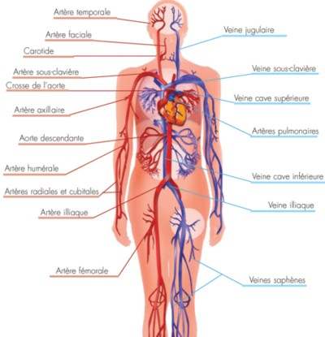
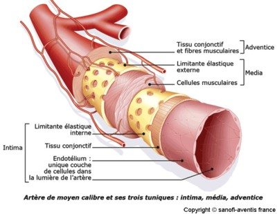
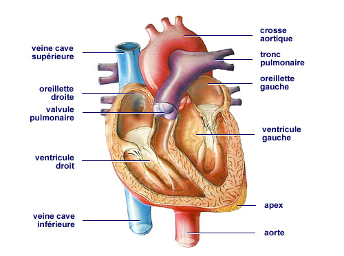
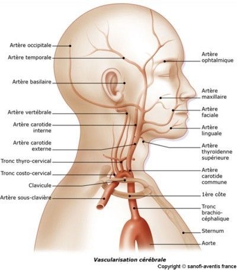
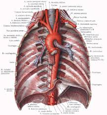
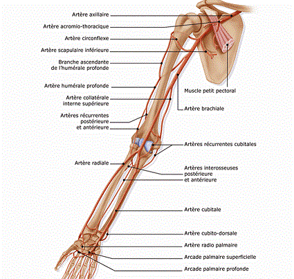
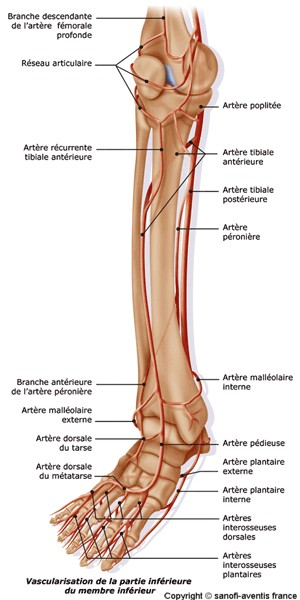
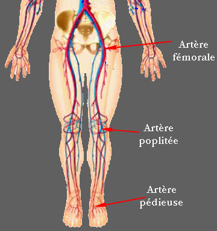

Anatomie vasculaire
Le sang circule a l'interieur d'un systeme de canaux, les vaisseaux, alimentes par l'activite du cœur.
Il existe trois categories de vaisseaux :
- Les arteres.
- Les veines.
- Les capillaires.

Histologie des vaisseauxTous les vaisseaux sauf les capillaires comprennent 3 couches :
- L’intima : tissu tres actif sur le plan metabolique, il favorise des interactions permanentes avec le sang avec lequel il est en contact permanent.
- La media : constitue la charpente musculo-elastique des vaisseaux, la quantite de fibres musculaires et de fibres elastiques depend du type de vaisseaux.
- L’adventice : zone d’innervation et de vascularisation importante. Elle permet la motricite nerveuse (le systeme neurologique agit) et l’apport nutritif aux vaisseaux.

Les arteres
Les arteres sont les vaisseaux conduisent le sang depuis le cœur jusque dans les organes.
Le systeme arteriel de la petite circulationL'artere pulmonaire sort du ventricule droit et se divise en deux pour irriguer chaque poumon puis pour se diviser encore en arteres lobulaires puis encore en petites arteres : les arterioles et enfin qui aboutissent aux alveoles pulmonaires.

Le systeme arteriel de la grande circulation L’aorte
qui sort du ventricule droit forme la crosse aortique qui s’enroule
autour du cœur et d’oe vont partir :
- Les arteres coronaires.
- Le tronc brachio-cephalique qui irrigue la tete par le biais des carotides, le cou par les sous-clavieres et l’artere vertebrale, les membres superieurs (arteres axillaires sous le bras et les arteres humerales au niveau du bras, les arteres radiales, les arteres cubitales, les arteres interosseuses et les arteres palmaires).
- Les arteres intercostales.
- Le tronc coelique qui vascularise l’abdomen :
- Les arteres stomachiques (estomac).
- L’artere hepatique (foie).
- L’artere splenique (intestin).
- L’artere mesenterique (intestin).
- Les arteres renales (rein gauche et rein droit).
- Les arteres iliaques :
- Les arteres hypogastriques (sous l’estomac) (visceres pelviens).
- Les arteres femorales.






Les veines
Les veines sont les vaisseaux qui ramenent le sang depuis les organes vers le cœur.
Elles sont tres dilatables et peuvent servir de reservoir sanguin. La plupart des veines suivent les trajets des arteres et se trouvent meme souvent incluses dans une meme gaine de protection.
Elles portent le meme nom que les arteres auxquelles elles se rapportent sauf les gros troncs qui penetrent dans le cœur (veines caves) sauf le systeme qui relie le mesentere au foie (veine porte) sauf les veines de surface de la cuisse (les saphenes).
Des veines dites perforantes relient les veines superficielles aux veines profondes. Dans l’endothelium, les veines comportent des veines ou des petites valvules qui empechent le reflux.
Le retour veineux est du :
- Aux residus de la force propulsive systolique (lors de la systole) cardiaque.
- A la depression abdominale qui provient des mouvements respiratoires du diaphragme.
- A l’ecrasement de la semelle veineuse lors de la marche.
- Aux messages musculaires des veines profondes lors de la marche.
- A la retenue valvulaire.


Les capillaires sont des vaisseaux microscopiques intermediaires entre les arteres et les veines, reliant ces deux systemes, et grece auxquels le sang parvient au contact direct de toutes les cellules de l'organisme.
Les capillaires sont extensibles, ils constituent 7000 me de surface d’echange entre le sang et les tissus, par exemple les globules blancs vont pouvoir traverser leur paroi et jouer ainsi un rele dans les reactions de defense des tissus.
La distribution des liquides des capillaires vers les tissus environnants depend des differentes pressions qui existent dans les capillaires et les venules (capillaire veineux). Normalement, les liquides passent dans les veines mais si les capillaires sont distendus, la diffusion augmente et l’excedent de filtration sera draine par le systeme lymphatique.
La circulation lymphatique
La circulation lymphatique se compose de deux parties plus ou moins independantes :
- Un reseau veineux de vaisseaux lymphatiques.
- Divers organes et divers tissus lymphatiques dissemines a divers endroits strategiques dans l’organisme.
Au niveau des capillaires sanguins se produit une transsudation du plasma et des globules blancs. Cette traversee des parois des capillaires forme le liquide interstitiel dans le quel baignent les cellules, la lymphe.
Dans la lymphe les cellules puiseront ce dont elles auront besoin (les substances nutritives) et rejetteront leurs dechets. La lymphe fait retour a la circulation generale par la circulation lymphatique.
La lympheLa lymphe est un liquide jaunetre de reaction alcaline, il s'agit d'un filtrat du plasma sanguin.,
Elle contient des globules blancs ou lymphocytes mais pas de globules rouges.
Le rele de la lymphe est multiple :
- Nutritif (les cellules et le sang) Elle apporte au sang les graisses necessaires qu’elle a absorbe au niveau de l’intestin grele.
- Drainage et epuration.
- Defense de l’organisme grece aux ganglions lymphatiques qui retiennent les microbes que la lymphe e absorber dans son parcours et les detruisent par phagocytose.
Les ganglions lymphatiques renferment des macrophages qui absorbent les dechets. Les vaisseaux lymphatiques se trouvent dans tout l’organisme.
Les capillaires lymphatiques sont collectes dans des canaux lymphatiques vers des vaisseaux lymphatiques puis vers des ganglions lymphatisme (renflement pour les dechets).
Les chaenes de ganglions lymphatiques se situent au niveau :
- De la racine des cuises.
- Des creux axillaires.
- De l’intestin = chyliferes qui reabsorbent la chyle issue de la lymphe au niveau de l’intestin grele).
- De la grande veine lymphatique qui draine la lymphe de la moitie droite de la tete, du cou, du thorax et du membre superieur droit et se jette ensuite vers la veine sous claviere droite.
- Du cou, le canal thoracique lui, collecte la lymphe du restant du corps ce sont les deux grands collecteurs.
Toutes les voies lymphatiques aboutissent au systeme veineux cave superieur qui aboutit au cœur droit (oreillette droite).
Les autres organes lymphatiquesLa rate qui contribue a la meme chose que les vaisseaux lymphatiques.
- Le thymus.
- Les amygdales.
- Les follicules lymphatiques.
Voir aussi :